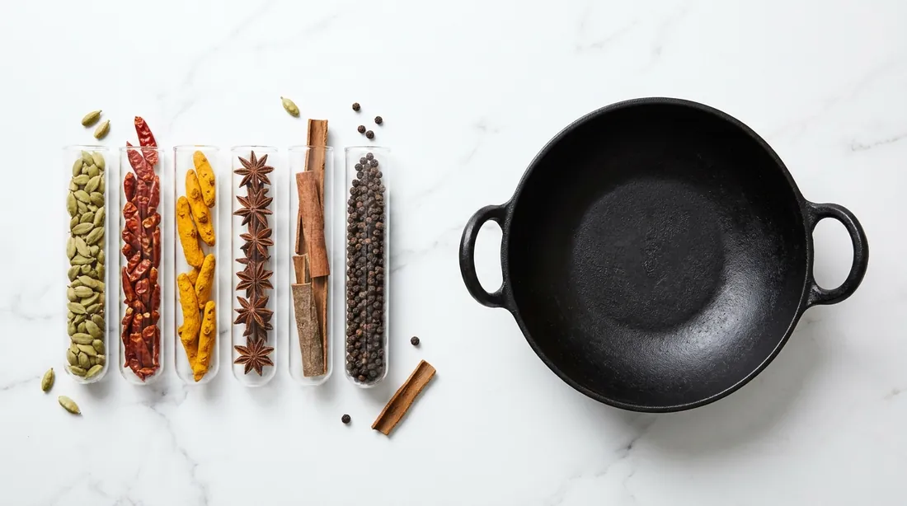
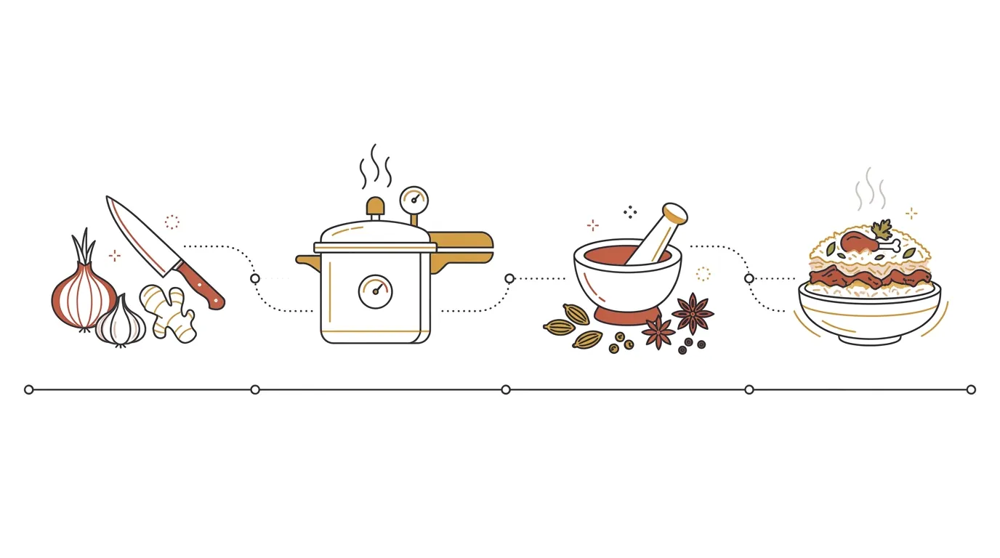
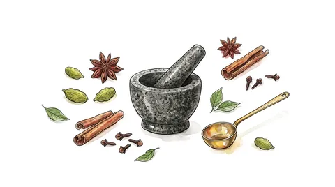

Indian Cooking as Chemical Engineering, Not Mystique.
Play with the physics and chemistry behind Krish Ashok’s Masala Lab. Watch water molecules speed up as you heat them, draw real skeletal structures of spice aromas, drag a cursor along the pH scale, plot umami synergy curves, and freeze a microwave’s standing wave. Press / to search any tool.

“We aren’t looking for authentic. We are looking for delicious and adventurous.”
The Book’s Core Metamodel: 4 Modular Stages
How Masala Lab replaces linear recipes with repeatable chemical workflows.

Zero-Pressure Cooking
Thermodynamics of heat, water bonds, pressure-cooking physics, cookware materials, rice amylose, and fat smoke points.
Interactive Cooking Thermal Spectrum (0°C – 480°C)
Drag the temperature slider or tap a milestone to inspect physical & chemical reactions (pp. 25, 29, 45, 59, 65, 152).
Why Dal Takes Forever in Shimla: Boiling Point vs Pressure
Water boils when its vapour pressure equals the pressure above it. Climb a mountain and that pressure drops. Seal a cooker and it rises (pp. 44–45).
2×2 Cooking Method Matrix
Moist (<100°C, no browning) vs. Dry (>100°C, Maillard browning) across Slow & Fast heat (p. 34).
Stop Counting Whistles: Peak-Pressure Timer
Start the clock after full pressure (121°C / +1 bar) is reached. Cuts cook time 30–40% (pp. 45–47).
15 Fats & Oils: Smoke Point Chart
Never deep-fry in unrefined/virgin oils; save expensive oils for finishing (p. 65).
Cookware Material Matrix
Conductivity, heat retention, and acid reactivity for 8 vessels (p. 36).
Science of Spice & Flavour
80% of flavour happens in the nose (retronasal olfaction). Spices pair harmoniously when they share volatile flavour molecules.
23-Spice Molecular Pairing Network
Click any spice node or filter by a shared chemical molecule (pp. 86–89) to highlight molecular pairings and craft a fresh masala.
Rule: Pick 1–2 dominant spices, then add partners sharing at least one volatile molecule. Don’t add too many or it turns into generic instant-noodle masala!
Taste Modulation Map
Sub-threshold pinch vs. medium concentration (p. 70).
Chilli Heat: Scoville Units & 20L Buckets
Capsaicin triggers TRPV1 heat receptors → brain releases endorphins. Fat & alcohol dissolve capsaicin; water & Coca-Cola fail (pp. 79–83).
Capsaicin (C18H27NO3): a polar vanillyl “head” (left ring) on a long greasy hydrocarbon “tail”. That tail makes it far more soluble in fat and alcohol than in water. Milk, ghee and coconut pull it off your TRPV1 receptors. Water just spreads it around.
12 Regional & Global Spice Blend Proportions
Visual size mirrors the book’s proportional typography diagrams (pp. 94–95). Always buy whole spices and grind fresh!

Brown, Baby, Brown
Allium chemistry, the 5 stages of onion browning, garlic burning physics, the 6 Maillard flavour families, and deep-frying.
5-Stage Onion Browning Simulator
Slide from raw onion to jammy Stage 5 caramelization (pp. 104–108). Outer layers pack more flavour & tears than inner layers!
Mechanical Damage & Pungency Dial
Onion (89% water, 9% carbs, 2% protein) vs. Garlic (59% water, 30% sugar, 6% protein — burns fast, always add after onion! pp. 103, 109).
Deep-Frying Oil Diagnostics
177°CSlide oil temperature to inspect puri / vada / birista outcomes (pp. 116–117).
The 6 Maillard Reaction Flavour Families (110–170°C)
When surface water boils away, sugars + amino acids form N-Glycosylamine and rearrange into six aromatic classes (pp. 113–115).
Dropping Acid
Salt is the volume knob; sourness is the bass guitarist and mixing engineer combined. Most balanced dishes sit at pH 4.3–4.9.
Interactive Culinary pH Scale (0 – 14)
Click any benchmark on the scale to explore proton chemistry, evolutionary bitterness bias, and the Coca-Cola sugar shock (pp. 121–131).
Indian Culinary Acid Profiler
Compare anchor acids (cooked long) vs. accent acids (added at end) across 9 ingredients (pp. 123–132).
Acid Layering: The Chaat Architecture
Why street chaat creates a "disco-party-in-the-mouth" (pp. 126, 132).
Umami, Soda, Rum
Rehabilitating three kitchen magic wands smeared by pseudoscience: MSG, sodium bicarbonate, and cooking alcohol.
Interactive Umami Synergy Calculator (T1R1/T1R3 Receptors)
Combining Glutamates with Nucleotides (IMP or GMP) produces a super-linear, lingering savoury amplification (pp. 134–136).
Activates the T1R1/T1R3 umami receptor and keeps salt/sweet receptors fired longer.
Nucleotides lock glutamates snugly inside the receptor pocket.
Sensory panels found that umami from glutamate (u) plus a 5′-nucleotide (v) follows y = u + γ·u·v, with γ ≈ 1218 for IMP and ≈ 2800 for GMP (concentrations in g/100 mL).
WhatsApp Forward vs. Food Science (Click Cards to Reveal Truth)
Every common Indian kitchen myth tested against chemistry from Chapters 1–5.
The Silver Medalist of Flavour Extraction: Alcohol
After fats, ethanol is the best solvent for spice aroma molecules—and fermented naan (~2%) or ripe bananas (0.5%) already contain alcohol (pp. 138–141).
Taking It to the Next Level
Modernist Indian cooking: microwave quantum physics, Instant Pot sensors, modernist emulsifiers & thickeners, smoking, and sous vide.
Microwave 2450 MHz Wave Visualizer
Wavelength = 12 cm → creates cold dead spots where wave amplitude = 0 (pp. 145–146).
7-Hack Microwave Cheat Sheet (pp. 144–146)
- 1. 3-Min Chana Sabzi: Coconut milk (or starch-stabilized yoghurt) emulsion heats fats alongside water + spices + canned/cooked chana.
- 2. Spreadable Butter: Half power melts butter evenly without turning water to steam and breaking the emulsion.
- 3. Tubular Restaurant Papad: Roll raw papad into a glass tumbler so every point rotates past standing-wave peaks.
- 4. 8-Min Ghee from Malai: Microwave collected milk cream in a tall vessel for 7–8 mins, then strain brown solids.
- 5. Emergency Chickpea Soak: Microwave dry chana in water 20 mins on low + rest 20 mins = 8-hour soak!
- 6. Instant Dried Herbs: Dehydrate curry leaves and mint into shelf-stable powders in minutes.
- 7. Single-Serve Pulao: 10 mins high (gelatinize at 80°C) + 10–15 mins low (water absorption) + lime & MSG.
Sous Vide Time & Temperature Guide
Thermal equilibrium guarantees zero overcooking. Always finish with a brief high-heat pan sear for Maillard crust (pp. 152–155).
Modernist Indian Pantry (pp. 149–152)
Melts any fancy cheese smoothly into IPL beer-cheese dips or chilli-chaat slices without fat splitting.
Tiny pinch stops polyphenol oxidase & oxidation so green chutneys stay electric green in the fridge.
Thickens gravies without muting flavour and lets jowar/bajra rotis roll cleanly without cracking.
Lecithin binds oil + watery acid into stable dressings; liquid smoke (or charcoal + ghee dhungar for 2–3 mins) adds tandoor aroma.
Burn the Recipe: Live Dish Engines
Five reusable metamodels plus exact weight-based hydration and 8% brining calculators.
The Biryani Project Plan & A/B Kitchen Log
Biryani is the "Gaia of dishes"—six parallel tracks converging into a 5-layer dum stack, plus Krish’s scientific kitchen journal.
6-Track Parallel Biryani Gantt Planner (p. 202)
Click a bar or tick a task as you go. Your progress is saved on this device. Balanced ratio = 1:1 rice to meat/veg by weight.
Hands-Free Milestone Timer
Quick presets from Chapter 8 (pp. 195–201).
Regional Biryani Matrix (pp. 203–204)
Same 6-track skeleton—swap spice mixes, masala milk, and meat preparation to travel across India (or go Thai/Mexican!).
The Chapatti Log · Personal A/B Experiment Tracker (p. 207)
Local humidity, water pH, stove output, and flour milling vary by city. Test A vs. B and journal everything!
| Date | Dish / Brand | Base (g) | Liquid (g) | Hydration | Outcome | Action |
|---|